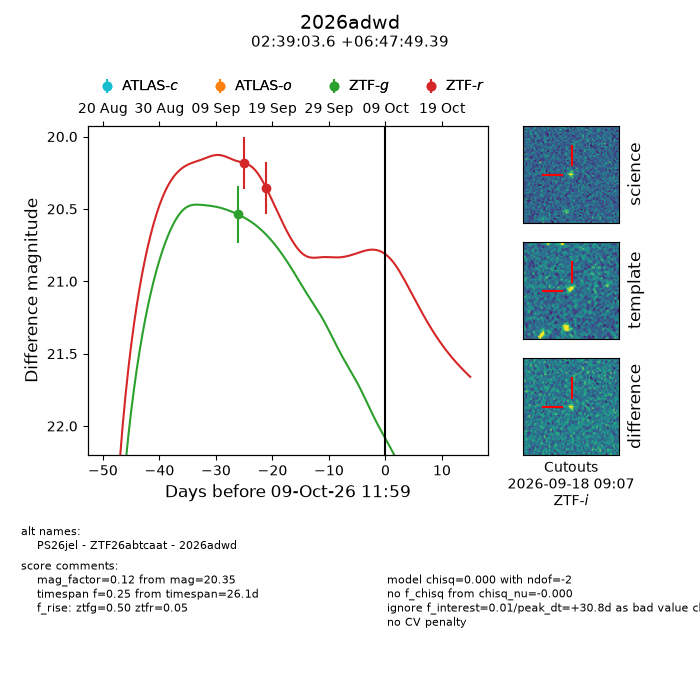
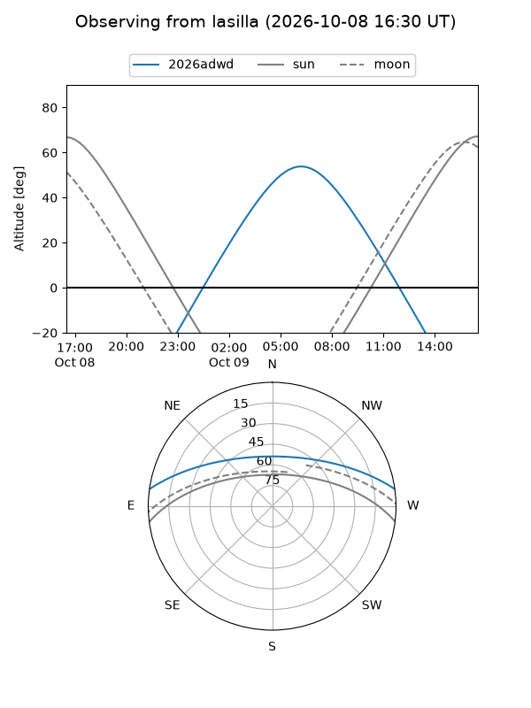
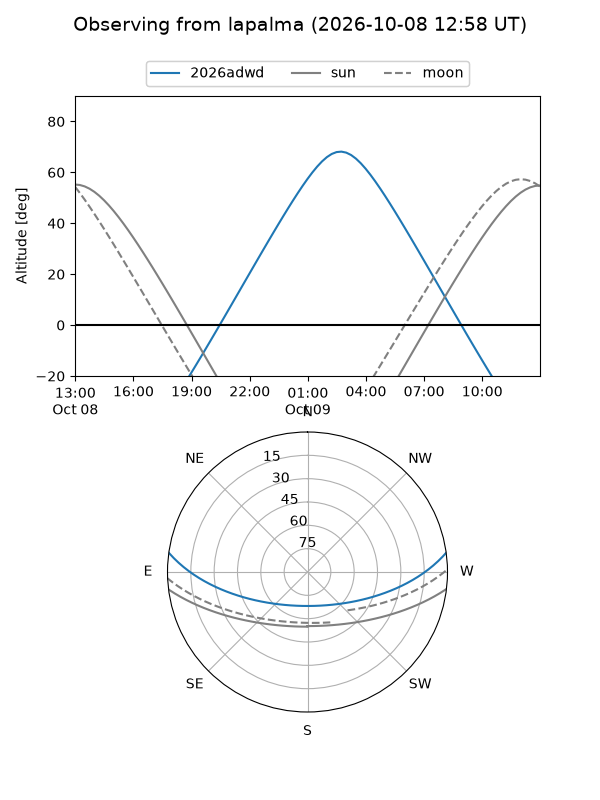
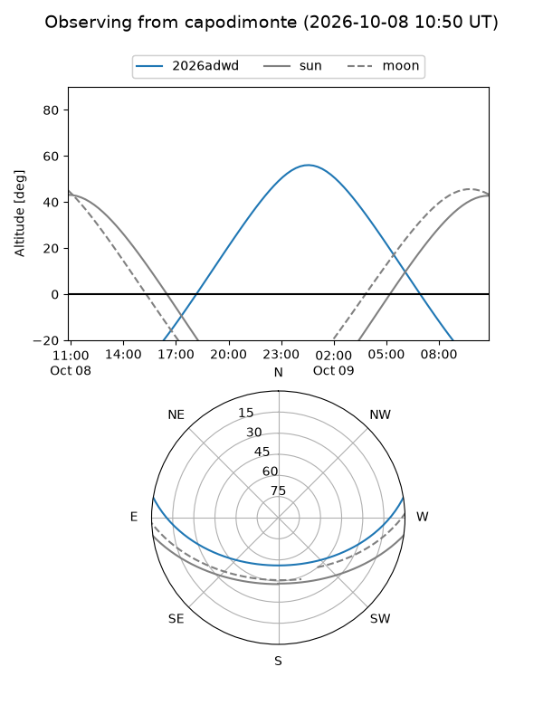
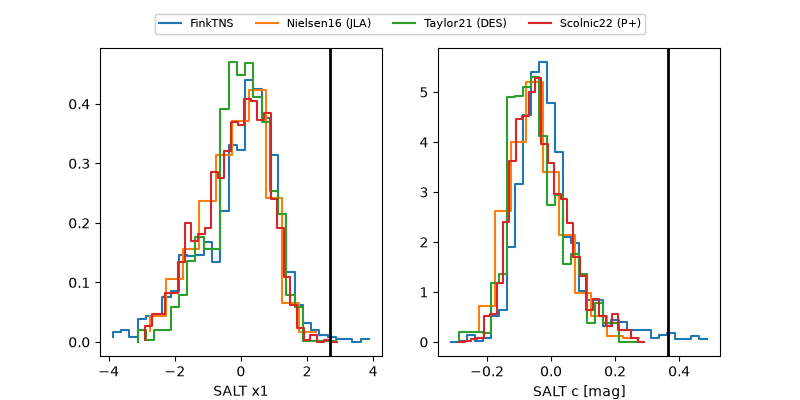

2026adwd
Target 2026adwd at 2026-10-09 12:01
Aliases and brokers:
FINK-ZTF: ztf.fink-portal.org/ZTF26abtcaat
Lasair-ZTF: lasair-ztf.lsst.ac.uk/objects/ZTF26abtcaat
ALeRCE-ZTF: alerce.online/object/ZTF26abtcaat
YSE-PZ: ziggy.ucolick.org/yse/transient_detail/2026adwd
TNS name: wis-tns.org/object/2026adwd
Direct TNS query: direct search
alt names
ZTF26abtcaat (ztf,fink_ztf)
2026adwd (tns,yse)
PS26jel (panstarrs)
Coordinates:
equatorial (ra, dec) = 39.7652,+6.79705
equatorial (HMS+DMS) = 02:39:03.65,+06:47:49.39
galactic (l, b) = (164.3643,-47.23155)
Flags:
peak dt: +30.8
Photometry:
last ztfg=20.54, ztfr=20.35
1 ztfg, 2 ztfr detections
Lightcurve

Visibility



Additional plots
